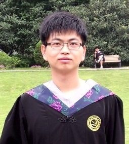
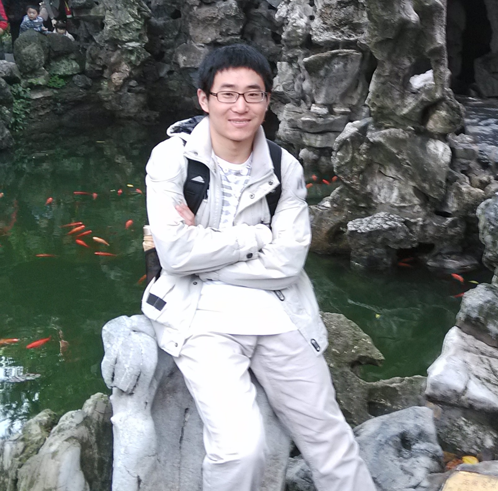
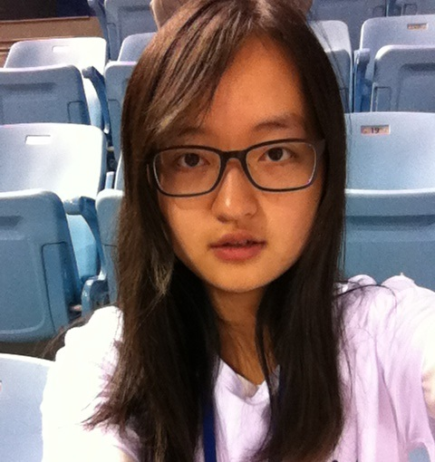

| Group Leader | |
| Professor Yun-Feng Xiao B.S.(2002), Ph.D(2007), University of Science and Technology of China Room: West 446, Physics Building, Peking University Phone: 86(10)6276.5512 E-mail: yfxiao[AT]pku[DOT]edu[DOT]cn |
|
| Postdoctoral and Graduate Students | |||
 |
Yanyan Zhi, Postdoctoral scholar Ph.D., University of Alberta (Canada), 2014 E-mail: yzhi[AT]pku[DOT]edu[DOT]cn |
Xiao-Chong Yu, Ph.D. candidate 2012 B. S., Peking University, 2012 E-mail: yuxc[AT]pku[DOT]edu[DOT]cn |
|
 |
Li Wang, Ph. D. candidate 2013 B. S., Peking University, 2013 E-mail: windwang[AT]pku[DOT]edu[DOT]cn |
Jian-Ning Xu, Ph.D. candidate 2014 B. S., Nanjing University, 2014 E-mail: jnxu[AT]pku[DOT]edu[DOT]cn |
|
| Shui-Jing Tang, Ph. D. candidate 2015 B. S., Wuhan University of Technology, 2015 |
 | Qi-Tao Cao, Ph.D. candidate 2015 B. S., University of Science and Technology of China, 2015 |
|
|  | Shu-Xin Zhang,
Master degree condidate 2014 B. S. in School of Physics, Najing University, 2014 E-mail: zsx_op[AT]pku[DOT]edu[DOT]cn |
||
| Undergraduates | |||
|  | Rui-Shan Liu, Undergraduate 2012 |
Ao-Xue Han, Undergraduate 2012 |
|
 |
Kang-Jing Huang , Undergraduate 2012 |
|
Xi Chen, Undergraduate 2012 |
|
He-Ming Wang, Undergraduate 2012 |
||
| Alumni | |
| Yong-Chun Liu 9/2010 - 7/2015, Ph.D. Student |
Principal Investigator Qian Xuesen Laboratory of Space Technology |
| Bei-Bei Li 9/2009- 7/2014, Ph.D. Student |
Post-doc The University of Queensland |
| Xue-Feng Jiang 9/2009 - 7/2014, Ph.D. Student |
Post-doc University of Oregon |
| Yi-Wen Hu 9/2011 - 7/2014, Master Student |
Ph.D. Candidate 2014 University of Maryland |
| Bo-Qiang Shen 2/2013 - 7/2015, Undergraduate |
Ph.D. Candidate 2015 California Institute of Technology |
| Dong-Yu Chen 2/2013 - 7/2015, Undergraduate |
Ph.D. Candidate 2015 University of Southern California |
| Zhou-Chen Luo 2/2013 - 7/2015, Undergraduate |
Ph.D. Candidate 2015 University of Maryland, College Park |
| Yu-Feng Shen 2/2013 - 7/2015, Undergraduate |
Ph.D. Candidate 2015 Carnegie Mellon University |
| Lin-Bo Shao 2/2012 - 7/2014, Undergraduate |
Ph.D. Candidate 2014 Harvard University |
| Meng-Yuan Yan 2/2012 - 7/2014, Undergraduate |
Ph.D. Candidate 2014 Stanford University |
| Wei-Liang Jin 2/2012 - 7/2014, Undergraduate |
Ph.D. Candidate 2014 Princeton University |
| Yi-Xiang Liu 5/2012- 10/2013, Undergraduate |
Ph.D. Candidate 2014 MIT |
| William Clements 9/2012- 7/2013, Visiting student |
Graduate Student M.S. student at École polytechnique, France |
| Hao-Kun Li 5/2011- 6/2013, Undergraduate |
Ph.D. Candidate 2013 University of California, Berkeley |
| Xue-Xin Ren 5/2011- 6/2013, Undergraduate |
Ph.D. Candidate 2013 University of California, Berkeley |
| Qi-Fan Yang 5/2011- 6/2013, Undergraduate |
Ph.D. Candidate 2013 California Institute of Technology |
| Xu Yi 12/2009- 6/2012, Undergraduate |
Ph.D. Candidate 2012 California Institute of Technology |
| Qiu-Shu Chen 5/2010- 6/2012, Undergraduate |
Ph.D. Candidate 2012 University of Michigan |